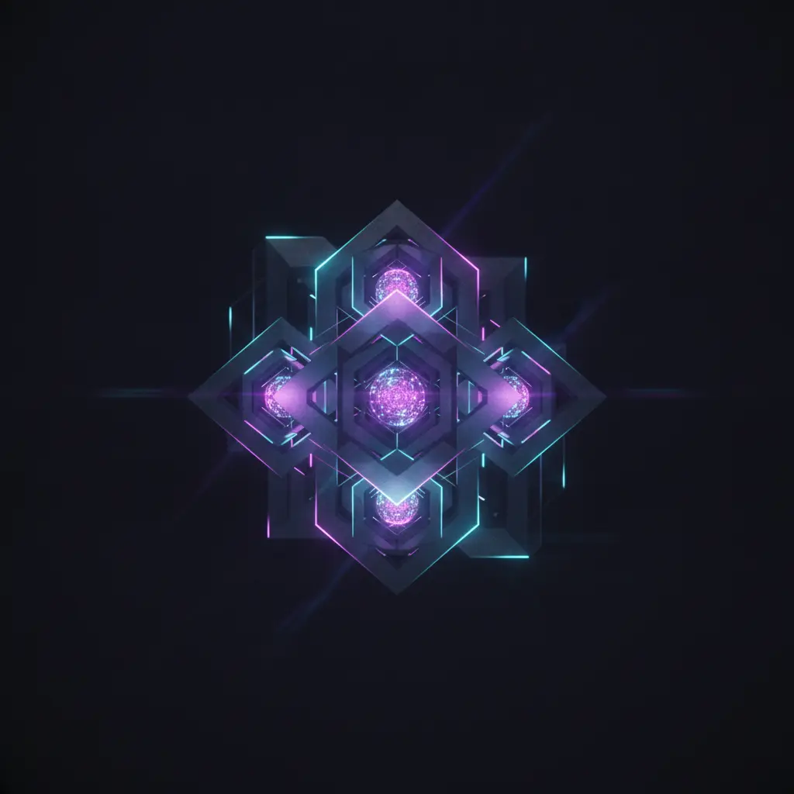

Stabile Automatisierungslösungen für produktive Geschäftsprozesse
Wir entwickeln keine Prototypen für die Schublade. Unsere Leistungen konzentrieren sich auf den Aufbau robuster, wartbarer und sicherer Systeme, die Ihre tägliche Arbeit spürbar erleichtern.
Prozess-Orchestrierung: Nahtlose End-to-End-Abläufe
Die manuelle Übertragung von Daten zwischen verschiedenen Systemen ist nicht nur zeitaufwendig, sondern auch extrem fehleranfällig.
Unsere Prozess-Orchestrierung verbindet Ihre Software-Inseln zu einem harmonischen, vollautomatisierten Gesamtprozess. Dabei setzen wir auf modernste Integrations-Technologien, die Daten in Echtzeit übertragen, validieren und verarbeiten.
Ein stabiler Prozess erfordert mehr als nur eine einfache API-Verbindung. Wir implementieren hochentwickelte Fehlerbehandlungs-Mechanismen (Error Handling). Sollte ein Drittsystem temporär nicht erreichbar sein, sorgt unser System durch intelligente Retries dafür, dass keine Daten verloren gehen. Zudem schützt eine strikte Idempotenz-Logik vor ungewollten Dubletten, während ein lückenloser Audit-Trail jeden einzelnen Prozessschritt revisionssicher dokumentiert. So behalten Sie stets die volle Kontrolle und Transparenz über alle automatisierten Abläufe in Ihrem Unternehmen.
- Vollautomatische Datenübertragung ohne manuelle Zwischenschritte
- Maximale Ausfallsicherheit durch automatisierte Fehlerbehandlung und Retries
- Revisionssichere Dokumentation aller Prozesse durch detaillierte Audit-Trails
KI in produktiven Abläufen: Intelligente Assistenten mit Leitplanken
Künstliche Intelligenz entfaltet ihr wahres Potenzial erst, wenn sie tief in Ihre bestehenden Arbeitsabläufe integriert ist.
Wir entwickeln maßgeschneiderte KI-Agenten und Assistenten, die komplexe Aufgaben wie die Klassifizierung von Dokumenten, die Priorisierung von Kundenanfragen oder die automatisierte Erstellung von Textentwürfen und Berichten übernehmen.
Um die Zuverlässigkeit dieser Systeme im geschäftlichen Alltag zu garantieren, arbeiten wir mit strengen Kontrollpunkten (Guardrails). Diese mathematischen und logischen Filter verhindern, dass die KI unerwünschte oder falsche Ergebnisse liefert. Zudem setzen wir konsequent auf das Prinzip 'Human-in-the-Loop': Kritische Entscheidungen oder finale Dokumentenfreigaben werden stets einem menschlichen Mitarbeiter vorgelegt. Sollte die KI bei einer komplexen Anfrage unsicher sein, greift sofort ein vordefiniertes technisches Fallback, das den Fall nahtlos an ein Teammitglied übergeben kann.
- Sinnvolle Einbettung von KI-Modellen direkt in Ihre täglichen Arbeitswerkzeuge
- Höchste Zuverlässigkeit durch maßgeschneiderte Guardrails und logische Filter
- Volle Kontrolle durch integrierte Freigabeprozesse (Human-in-the-Loop)

Daten, APIs und Betrieb: Die Lebensader Ihrer IT-Infrastruktur
Moderne Unternehmen nutzen eine Vielzahl spezialisierter Softwarelösungen. Die Finaler Test GmbH sorgt dafür, dass diese Systeme reibungslos miteinander kommunizieren.
Wir verknüpfen Ihre CRM-, ERP-, DMS- und Office-Systeme (wie Microsoft 365 oder Google Workspace) sowie individuelle Branchensoftware über sichere und performante APIs.
Unsere Arbeit beginnt mit einer präzisen Datenanalyse und einem detaillierten Feld-Mapping. Wir stellen sicher, dass Datenformate exakt übersetzt und vor der Übergabe an das Zielsystem gründlich validiert werden. Nach der erfolgreichen Implementierung übergeben wir die Systeme in den kontinuierlichen Betrieb. Durch ein umfassendes System-Monitoring (Observability) erkennen und beheben wir potenzielle Engpässe oder Schnittstellenfehler, noch bevor sie Auswirkungen auf Ihr Tagesgeschäft haben können. Sie erhalten ein rundum sorglos betreutes System.
- Nahtlose Verknüpfung von Cloud-Diensten, On-Premise-Software und Individual-APIs
- Präzise Datenvalidierung verhindert fehlerhafte Einträge in Ihren Kernsystemen
- Proaktives Monitoring sichert eine dauerhaft hohe Performance und Systemverfügbarkeit
Erprobte Referenz-Systeme: Schneller am Ziel
Um den Entwicklungsprozess zu beschleunigen und Projektrisiken zu minimieren, greifen wir auf ein Portfolio bereits entwickelter und in der Praxis erprobter Referenz-Systeme zurück.
Website-Generator
Automatisierte Erstellung und Aktualisierung von Web-Inhalten basierend auf strukturierten Datenquellen.
LV-Analysator
Intelligente Analyse und Strukturierung von komplexen Leistungsverzeichnissen und Ausschreibungsunterlagen.
Bauvorhaben-Radar
Automatisierte Erfassung, Filterung und Priorisierung von regionalen Bauprojekten und Ausschreibungen.
Voice Agent
Intelligente, sprachbasierte Assistenzsysteme für die automatisierte Vorqualifizierung von Telefonanfragen.
Medien-Publisher
Automatisierte Aufbereitung und Verteilung von redaktionellen Inhalten über verschiedene digitale Kanäle.
Unsere standardisierten Einstiegspakete
Wir machen Ihnen den Einstieg in die Automatisierung so einfach und risikofrei wie möglich.
Process Scan
Eine tiefgehende Analyse Ihrer aktuellen Prozesse, Datenflüsse und IT-Infrastruktur. Wir identifizieren die größten Effizienzfresser und erstellen eine konkrete, priorisierte Roadmap für die Automatisierung.
MVP in 2–4 Wochen
Wir setzen ein erstes, fokussiertes Automatisierungsmodul als Minimum Viable Product (MVP) um. Sie erhalten innerhalb kürzester Zeit ein voll funktionsfähiges, dokumentiertes System, das sofort im Echtbetrieb läuft.
Betrieb & Ausbau
Wir übernehmen die kontinuierliche Wartung, das Monitoring und die iterative Erweiterung Ihrer Systeme. Inklusive automatisiertem Alerting, regelmäßigen Updates und der Erstellung detaillierter Runbooks.
Lassen Sie uns Ihre Prozesse stabilisieren
Egal ob Sie am Anfang Ihrer Automatisierungsreise stehen oder eine bestehende, instabile Lösung durch ein robustes System ersetzen möchten – wir unterstützen Sie mit technischer Exzellenz und klarem Fokus auf den stabilen Betrieb.